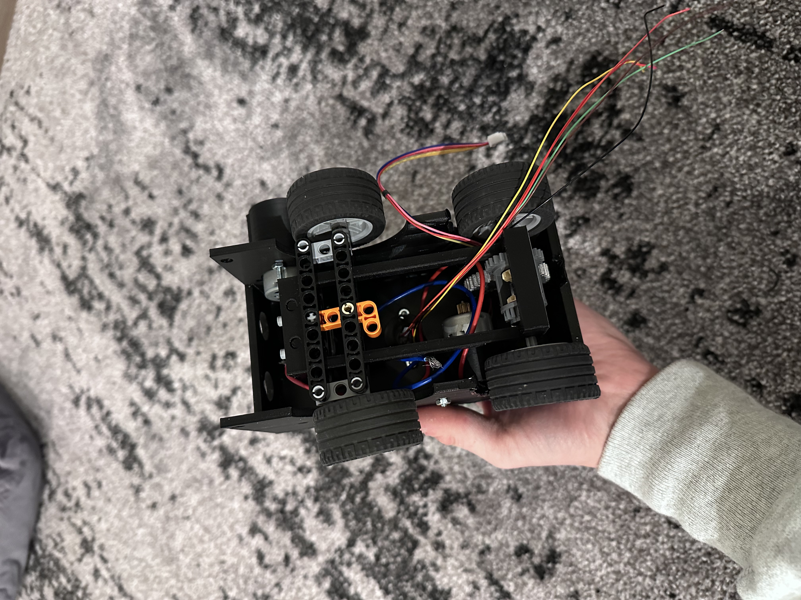
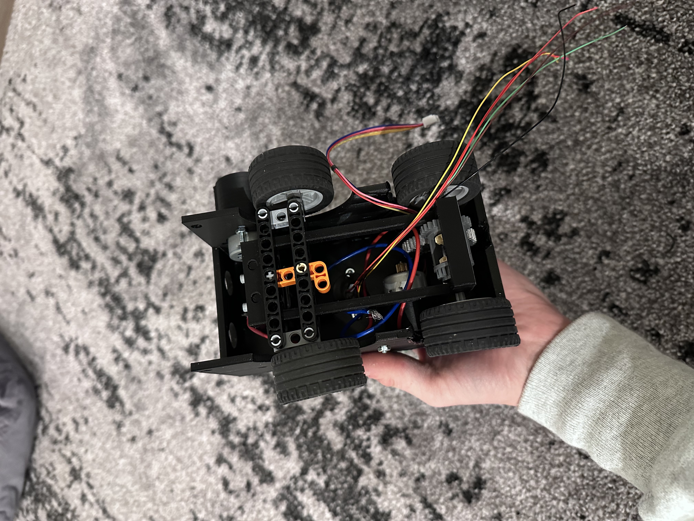

PROJECT DESCRIPTION
Wiping the counters clean is my least favorite part of doing the dishes. So it would be really cool if I could create something to do it for me- introducing, the Counter Sweeper!
This car will wash your counters for you (once it's built, that is). Once finished, it will:
- 1. Use an ultrasonic sensor to map out where it is, and where it has been.
- 2. Use a raspberry pi to control the motors and sensor.
- 3. Sweep the counter of dust and dirt. Level 2- implement water so it can wipe it clean.
Tools used: Fusion 360, 3D Printer, Rasberry Pi, Ultrasonic Sensor
PROGRESS
I worked on this project with a partner. As he constructed the body of the car, my job was to create a 3D model of the structure to hold the sensor above the car. Using gears and a slip ring, the pipe can spin 360 degrees, allowing the sensor to capture the counter below from any position. Its movements are controlled by the Raspberry Pi. Here is the model:
Initially when we assembled the car, we were using an arduino. But we soon found that because it only allowed for one process at a time, it made it extremely difficult to control the wheels and sensor motors and distribute the code instructions to the sensor all at once. Here was its state after the first assembly:
 

NEXT STEPS
1. The rasberry pi needs to be implemented in place of the arduino.
2. Code needs to be refined to send instructions to the sensor in order to map the counter surroundings.